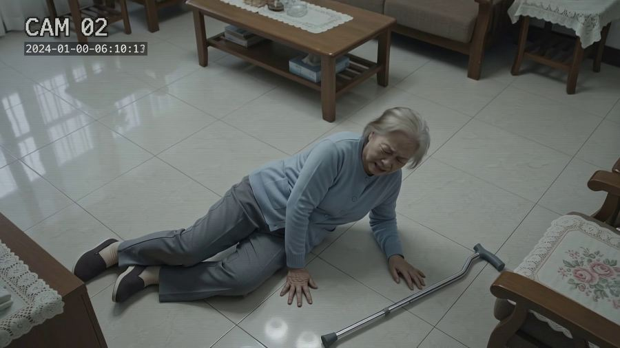
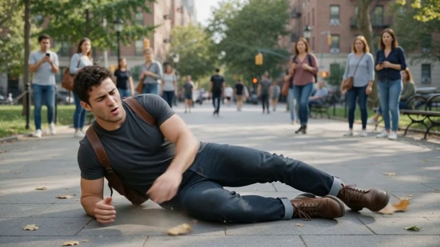
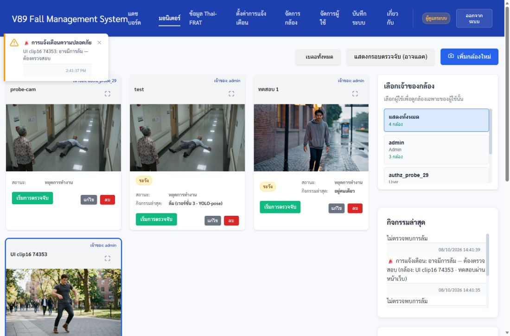
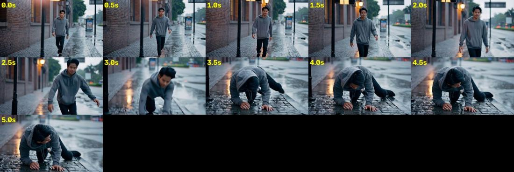

ใช้งานทุกฟังก์ชัน วัดความแม่น และเทียบกับระบบเดิม
ทดสอบบนเครื่องพัฒนาด้วย CPU 4 คอร์ (จำลองเซิร์ฟเวอร์ที่ไม่มีการ์ดจอ) ใช้ โมเดลตัวจริงที่จะใช้วันที่ 9 ทุกการทดสอบการใช้งานทำผ่านหน้าเว็บ เหมือนที่ผู้ใช้เห็น
ฉบับอ่านง่าย (อ่าน 2 นาที)
- ใช้ได้ ทุกฟังก์ชันที่ลองผ่านหน้าเว็บทำงาน — เพิ่มกล้อง, เริ่ม/หยุดตรวจจับ, แจ้งเตือนขึ้นหน้าเว็บ, เปิดคลิปย้อนหลัง, กดรับทราบ, ผู้ใช้ใส่ LINE ของตัวเอง, จัดการผู้ใช้, แบบประเมิน Thai-FRAT, เปลี่ยนโมเดล, กล้อง RTSP หลุดแล้วกลับมาเอง
- ใช้ได้ คลิปคนล้มจริง 4 คลิป จับได้ 3 (14, 15, 16) แจ้งเตือนประมาณ 8–10 วินาทีหลังล้ม คลิปที่จับไม่ได้คือคลิป 13 (ยากที่สุด ยาวแค่ 5 วินาที)
- ใช้ได้ คลิปไม่มีคนล้ม (17 กลุ่มคนออกกำลังกาย) ระบบเงียบ ตลอด 3 นาที — ระบบเดิมเตือนผิดในคลิปนี้
- ดีกว่าเดิม เทียบกับระบบเดิมบนข้อมูลชุดเดียวกัน: ระบบใหม่จับการล้มในชุดมาตรฐานได้มากกว่า เตือนผิดน้อยกว่า และดีกว่าชัดเจนตอนกลางคืน
- ยังแย่กว่าเดิม บนคลิปของเจ้าของเอง ระบบเดิมยังจับการล้มได้มากกว่า (44 จาก 75 เทียบกับ 34) แต่ระบบเดิมเตือนผิดมากกว่า (5 เทียบกับ 1.75) — ดูหัวข้อ เทียบระบบเดิม
- ต้องระวัง ความเร็วจริงตอนทดสอบ 4.3–6.6 ภาพ/วินาที ต่ำกว่าเป้า 8 ยิ่งช้า ยิ่งจับพลาดง่าย
- รอเจ้าของ ปุ่ม "รับทราบ" ใน LINE + คลิปย้อนหลังใน LINE ยังทดสอบไม่ได้ จนกว่าจะใส่
LINE_CHANNEL_SECRETใน .env
1. ใช้งานทุกฟังก์ชัน
ทุกแถวคือการทดสอบที่รันจริงวันนี้ (8 ต.ค. 14:35–15:05) แถวที่เขียนว่า "หน้าเว็บ" คือเปิดเบราว์เซอร์จริงแล้วกดเหมือนผู้ใช้ ไม่มีการส่ง LINE จริงระหว่างทดสอบรอบนี้ (สวิตช์ LINE ของทุกคนปิดอยู่ ตรวจแล้วก่อนเริ่ม)
| ฟังก์ชัน | ทดสอบอย่างไร | ผล |
|---|---|---|
| เข้าสู่ระบบ + เปิดทุกหน้า (8 หน้า) | หน้าเว็บ: เปิดทีละหน้า, ตัวอักษรบนปุ่มอ่านออก, ใช้บนจอมือถือกว้าง 390 px ได้ | ผ่าน |
| เพิ่มกล้อง (ไฟล์วิดีโอทดสอบ) → มอนิเตอร์ → เริ่มตรวจจับ | หน้าเว็บ ทำซ้ำ 8 ครั้ง (คลิป 10, 11, 13–17 และ 15 ซ้ำ) | ผ่าน ครั้งแรกของคลิป 15 ล้มเหลวเพราะสคริปต์ทดสอบเลือกเจ้าของกล้องก่อนรายชื่อโหลดเสร็จ — แก้สคริปต์แล้วรันใหม่ผ่าน |
| แจ้งเตือนการล้มขึ้นหน้าเว็บ (ป๊อปอัป + รายการแจ้งเตือน) | หน้าเว็บ คลิป 14, 15, 16 | ผ่าน |
| คลิปย้อนหลังในแจ้งเตือน | หน้าเว็บ: เปิดคลิปจากรายการแจ้งเตือน เล่นได้ 4.4–6.4 วินาที | ผ่าน คลิปเก็บได้สูงสุด 60 วินาทีก่อนเหตุ แต่ในการทดสอบกล้องเพิ่งเปิดได้ไม่กี่วินาที จึงสั้น |
| กดรับทราบในเว็บ | หน้าเว็บ: กด "รับทราบ" → ขึ้น "✓ รับทราบแล้ว" | ผ่าน |
| หยุดตรวจจับ + ลบกล้อง | หน้าเว็บ ทุกรอบ | ผ่าน |
| ผู้ใช้ทั่วไปใส่ LINE ID ของตัวเอง | หน้าเว็บ: แอดมินสร้างผู้ใช้ → ผู้ใช้เห็นเมนู "ตั้งค่าการแจ้งเตือน" → ใส่ ID → เปิดสวิตช์ → บันทึก → รีโหลดแล้วยังอยู่ → ปิด → แอดมินลบผู้ใช้ | ผ่าน |
| ผู้ใช้ทั่วไปเปลี่ยน token บอทไม่ได้ / ไม่เห็นกลุ่ม LINE ของคนอื่น | ทดสอบหลังบ้าน 15 ข้อ (test_line_routes) | ผ่าน 15/15 |
| แจ้งเตือนซ้ำเมื่อไม่มีคนรับทราบ (escalation) | ทดสอบหลังบ้าน 15 ข้อ ไม่ส่ง LINE จริง (test_line_escalation) | ผ่าน |
| ข้อความ LINE ถึงมือถือจริง | ทดสอบไปแล้วเมื่อ 8 ต.ค. 12:27 และ 14:10 (ข้อความทดสอบ, อยู่คนเดียว, ล้ม 88%) | ผ่าน |
| ปุ่ม "รับทราบ" ใน LINE + คลิปใน LINE | ต้องมี LINE_CHANNEL_SECRET และทางเข้าชั่วคราวจากอินเทอร์เน็ต | รอเจ้าของใส่ secret |
| แบบประเมิน Thai-FRAT | หน้าเว็บ: กรอก 6 ข้อ → คะแนนรวม 65 ถูกต้อง → ดูรายละเอียด → แก้ข้อ 1 → คะแนนเป็น 40 ถูกต้อง → ลบ | ผ่าน |
| เปลี่ยนโมเดล (ตัวจริง ↔ ทางเลือก A) และย้อนกลับ | test_model_switch + test_compose_model_default | ผ่าน |
| กล้อง RTSP: ปิด, ค้าง, หลุด, กลับมา | test_rtsp_robustness กับกล้องจำลอง — ไม่ค้าง, ต่อใหม่ได้เอง, อ่าน 8 ภาพ/วินาทีนาน 180 วินาทีไม่ตกเลย | ผ่าน |
| จำกัดสูงสุด 4 คนต่อภาพ | test_people_cap + test_replay_cap | ผ่าน |
| อัปเกรดบนเซิร์ฟเวอร์ตามคู่มือ (ซ้อม) | ซ้อมทำตามคู่มือ runbook_9oct ตั้งแต่ต้น | ผ่าน |
2. ความแม่น
2.1 คลิปทดสอบ ผ่านหน้าเว็บ (สิ่งที่ผู้ใช้จะเห็นจริง)
แต่ละคลิปเปิดเป็นกล้อง 1 ตัว ดูผลในหน้าเว็บนาน 3 นาที (คลิป 10, 11 นาน 2 นาที) วิดีโอเล่นวนซ้ำ จึงนับเฉพาะรอบแรก เวลาล้มในคลิปดูด้วยตาจากภาพทุกครึ่งวินาที
| คลิป | เนื้อหา | ควรเป็น | ผล | ล้มที่วินาที | เตือนหลังล้ม | คนในภาพ |
|---|---|---|---|---|---|---|
| 14 | ยายถือไม้เท้าล้มในห้องนั่งเล่น | เตือน | เตือน | ~4.0 | ~10 วิ | 1 |
| 15 | ชายล้มในทางเดินโรงพยาบาล มีอีกคนเดินผ่าน | เตือน | เตือน | ~5.0 | ~8 วิ | 2 |
| 16 | ชายสะดุดล้มกลางลานคนเยอะ | เตือน | เตือน | ~6.5 | ~10.5 วิ | 4 |
| 13 | ชายลื่นล้มลงคลานบนทางเท้าเปียก (คลิปยาว 5 วิ) | เตือน | ไม่เตือน | ~2.5 | — | 1 |
| 17 | กลุ่มคนออกกำลังกาย ไม่มีใครล้ม | เงียบ | เงียบ | — | — | หลายคน |
| 10 | เด็กเล็กตกบันได (นอกขอบเขต) | — | ไม่เตือน | ~3 | — | — |
| 11 | เด็กตกเตียงสองชั้น กล้องกลางคืน (นอกขอบเขต) | — | ไม่เตือน | ~11 | — | — |
ผลรวมในขอบเขต: ล้มจริง 4 คลิป เตือน 3 · ไม่มีล้ม 1 คลิป เงียบ 1 · คลิปเด็ก 10, 11 อยู่นอกขอบเขตของระบบ (เด็ก, ภาพเล็ก, วิดีโออัดซ้ำจากมือถือ) ไม่นับ · "เตือนหลังล้ม" เป็นค่าประมาณจากเวลาในบันทึกระบบเทียบกับเวลาล้มในคลิป รวมเวลาเปิดกล้องราว 1–2 วินาทีแล้ว · ตัวอย่างแค่ 5 คลิป ใช้ยืนยันว่าระบบทั้งสายทำงานจริง ไม่ใช่ตัวเลขความแม่นของระบบ — ความแม่นดูที่ 2.2




2.2 ชุดวัดมาตรฐาน (วัดเหมือนเดิมทุกครั้ง ใช้ตัดสินว่าดีขึ้นหรือแย่ลง)
ตัวเลขเฉลี่ยจาก 8 รอบ (เริ่มตัดภาพต่างจังหวะกัน) ยกเว้นกลางคืน 3 รอบ (สัญญาณรบกวนต่างกัน) "ตัวจริง" คือโมเดลที่จะใช้วันที่ 9 · "ทางเลือก A" คือโมเดลที่ฝึกเพิ่มสำหรับกลางคืน เปลี่ยนได้ด้วย 3 บรรทัดใน .env
| ชุดวัด | ตัวจริง (ใช้ 9 ต.ค.) | ทางเลือก A | อ่านว่า |
|---|---|---|---|
| URFD ล้ม (ครึ่ง B, 28 คลิป) จับได้ | 21.8 | 23.4 | ยิ่งมากยิ่งดี |
| URFD กิจวัตร (ครึ่ง B, 20 คลิป) ไม่เตือนผิด | 17.1 | 16.5 | ยิ่งมากยิ่งดี |
| GMDCSA กิจวัตร (16 คลิป) ไม่เตือนผิด | 7.1 | 10.9 | ยิ่งมากยิ่งดี |
| กลางคืนจำลอง: ล้ม 60 คลิป จับได้ | 17 / 16 / 20 | 37 / 40 / 36 | ยิ่งมากยิ่งดี |
| กลางคืนจำลอง: กิจวัตร 40 คลิป เตือนผิด | 4 / 3 / 3 | 7 / 2 / 2 | ยิ่งน้อยยิ่งดี |
| คลิปของเจ้าของ: ล้ม 75 ครั้ง จับได้ | 33.75 | 37.1 | ยิ่งมากยิ่งดี |
| คลิปของเจ้าของ: ช่วงไม่มีล้ม 13 ช่วง เตือนผิด | 1.75 | 0.5 | ยิ่งน้อยยิ่งดี |
| คลิปของเจ้าของ: ล้มขณะมีหลายคน 25 ครั้ง จับได้ | 10.9 | 15.25 | ยิ่งมากยิ่งดี |
| Le2i ครึ่งแรก: ล้ม 47 คลิป จับได้ | 41–43 | 42–43 | ยิ่งมากยิ่งดี |
| Le2i ครึ่งแรก: ไม่มีล้ม 16 คลิป เตือนผิด | 0 | 0 | ยิ่งน้อยยิ่งดี |
ทำไมวันที่ 9 ยังใช้ตัวจริง ไม่ใช้ A ที่ตัวเลขดีกว่า: A มองเฟอร์นิเจอร์บางอย่างเป็นคน (เก้าอี้ยาวในห้องว่าง 8 จาก 12 ภาพ) ทำให้เตือน "อยู่คนเดียว" ทั้งที่ห้องว่าง และเห็นคนในภาพห้องว่างบ่อยกว่าตัวจริงเกือบ 2 เท่า (13.3% เทียบกับ 7.3% ของภาพในบ้านที่ไม่มีคน 300 ภาพ) เจ้าของเลือกตัวจริงเมื่อ 8 ต.ค. — A ยังสลับใช้ได้ใน .env
2.3 ความเร็ว (สำคัญ เพราะช้า = จับพลาด)
| สถานการณ์ (CPU 4 คอร์) | ภาพ/วินาที | เทียบเป้า 8 |
|---|---|---|
| กล้องเดียว คลิป 14 (1 คน) — วัดซ้ำ 3 รอบ | 6.6 | ต่ำกว่าเป้า |
| กล้องเดียว คลิป 17 (คนเยอะ) — วัดซ้ำ 3 รอบ | 5.7 | ต่ำกว่าเป้า |
| กล้องเดียว คลิป 17 ระหว่างทดสอบผ่านหน้าเว็บวันนี้ (นาทีที่ 2–3) | 4.3–4.7 | ต่ำกว่าเป้ามาก |
| 4 กล้องพร้อมกัน (คลิป 14, 15, 16, 1) | 5.3–5.9 ต่อกล้อง | ต่ำกว่าเป้า |
วันนี้ช้ากว่าที่เคยวัด อาจเพราะเครื่องรันงานเทียบระบบเดิม 3 งานพร้อมกัน (คนละคอร์ แต่ใช้หน่วยความจำร่วม)
ส่วนที่กินเวลาคือขั้นตรวจหาคนในภาพ 81–85% · เซิร์ฟเวอร์จริงมี 4 คอร์เหมือนกัน — ถ้าวันที่ 9 เห็นตัวเลข "Detection rate" ต่ำกว่า 5 ให้บันทึกไว้
วันที่ 9: ยิ่งเปิดกล้องพร้อมกันมาก แต่ละกล้องยิ่งช้า (4 กล้อง ≈ 5.3–5.9 ภาพ/วินาที) — ถ้าต้องการดูความแม่นของการจับล้มโดยไม่ให้ความเร็วเป็นตัวถ่วง ให้ทดสอบทีละ 1–2 กล้องก่อน
3. เทียบกับระบบเดิม
ระบบเดิม = โค้ดชุดแรกของโปรเจกต์ (commit ce401fa: MediaPipe + ตัวตัดสินเดิม ตรวจลายนิ้วมือไฟล์แล้วว่าเป็นตัวเดิมจริง) รันบนคลิปชุดเดียวกัน และนับคะแนนด้วยโปรแกรมนับตัวเดียวกันกับระบบใหม่ แต่ละระบบรันที่ความเร็วที่ตัวเองทำได้จริงบน CPU (ระบบเดิม 14 ภาพ/วินาที เพราะเบากว่า, ระบบใหม่ 8)
| ชุดวัด | ระบบเดิม | ใหม่ ตัวจริง | ใหม่ A | ใครดีกว่า |
|---|---|---|---|---|
| URFD ล้ม (ครึ่ง B, 28) จับได้ | 14 | 21.8 | 23.4 | ใหม่ |
| URFD ล้มทั้งหมด (60) จับได้ | 25 | — | — | ใหม่วัดเฉพาะครึ่ง B (ครึ่ง A ใช้ปรับค่า) |
| URFD กิจวัตร (ครึ่ง B, 20) ไม่เตือนผิด | 13 | 17.1 | 16.5 | ใหม่ |
| GMDCSA กิจวัตร (16) ไม่เตือนผิด | 8 | 7.1 | 10.9 | เดิม ≈ ตัวจริง · A ดีกว่า |
| กลางคืนจำลอง ล้ม (60) จับได้ | 10 / 12 / 12 | 17 / 16 / 20 | 37 / 40 / 36 | ใหม่ (A ดีกว่าเดิม 3 เท่า) |
| กลางคืนจำลอง กิจวัตร (40) เตือนผิด | 8 / 10 / 12 | 4 / 3 / 3 | 7 / 2 / 2 | ใหม่ |
| คลิปทดสอบ 13–16 (ล้มจริง 4) จับได้ | 3 | 3 | — | เท่ากัน (พลาดคลิป 13 ทั้งคู่) |
| คลิปทดสอบ 17 (ไม่มีล้ม) | เตือนผิด | เงียบ | — | ใหม่ |
| คลิปของเจ้าของ: ล้ม 75 ครั้ง จับได้ | 44 | 33.75 | 37.1 | เดิม |
| คลิปของเจ้าของ: 13 ช่วงไม่มีล้ม เตือนผิด | 5 | 1.75 | 0.5 | ใหม่ |
| คลิปของเจ้าของ: ล้มขณะมีหลายคน (25) มีเตือน | 16 | 10.9 | 15.25 | เดิม (ดูหมายเหตุ) |
| เห็นคนที่ล้มนอนอยู่ (ภาพยาก: 2 วินาทีหลังล้ม) | 71.7% | 81.2% | — | ใหม่ |
| ความเร็วบน CPU | 14 ภาพ/วิ | 5.7–6.6 | — | เดิม (เบากว่า) |
สรุปแบบตรงไปตรงมา: ระบบใหม่ดีกว่าเดิมในเกือบทุกชุดวัด โดยเฉพาะตอนกลางคืนและการไม่เตือนผิด แต่บนคลิปของเจ้าของเอง ระบบเดิมจับการล้มได้มากกว่า 10 ครั้งจาก 75 (44 เทียบกับ 34) ซึ่งไม่ใช่ความต่างเล็กน้อย
เหตุผลหลัก: ระบบเดิม "ไวกว่า" — เตือนง่ายกว่า จึงจับได้มากกว่าแต่ก็เตือนผิดมากกว่า (5 เทียบกับ 1.75) และวิ่งเร็วกว่าเกือบ 2 เท่าบน CPU (เห็นจังหวะล้มต่อเนื่องกว่า) ทางเลือก A ปิดช่องว่างได้บางส่วน (37 จาก 75 และหลายคน 15)
สิ่งที่ยังต้องทำต่อหลังวันที่ 9: ทำให้ระบบใหม่เร็วขึ้นบน CPU และแก้ปัญหา A เห็นเฟอร์นิเจอร์เป็นคน แล้วจึงเปลี่ยนเป็น A
เทียบรายคลิป (คลิปรวมเหตุการณ์ในโฟลเดอร์ Test/)
แต่ละคลิปมีหลายเหตุการณ์ ตัดเป็นช่วง · ตัวจริง = ค่าเฉลี่ย 8 รอบ (ต่ำสุด–สูงสุด) · ไฟล์เต็มอยู่ที่ test_result/fulltest_8oct/accuracy_by_clip.md
| คลิป | ช่วงที่มีคนล้ม | ใหม่ จับได้ | เดิม จับได้ | ช่วงไม่มีล้ม | ใหม่ เตือนผิด | เดิม เตือนผิด | จับได้มากกว่า |
|---|---|---|---|---|---|---|---|
| 1.mp4 | 15 | 9.2 (8–10) | 8 | 1 | 0.0 | 0 | ใหม่ |
| 3.mp4 | 1 | 1.0 (1–1) | 1 | 0 | 0.0 | 0 | ใกล้กัน |
| 4.mp4 | 10 | 4.8 (4–6) | 6 | 4 | 0.8 | 3 | เดิม |
| 5.mp4 | 17 | 9.8 (8–11) | 10 | 0 | 0.0 | 0 | ใกล้กัน |
| 6.mp4 | 1 | 0.9 (0–1) | 1 | 0 | 0.0 | 0 | ใกล้กัน |
| 7.mp4 | 2 | 0.6 (0–1) | 2 | 0 | 0.0 | 0 | เดิม |
| 8.mp4 | 10 | 2.9 (2–4) | 9 | 3 | 0.0 | 0 | เดิม |
| 9.mp4 | 17 | 2.8 (2–4) | 5 | 3 | 1.0 | 1 | เดิม |
| 12.mp4 | 2 | 1.9 (1–2) | 2 | 2 | 0.0 | 1 | ใกล้กัน |
| รวม | 75 | 33.75 | 44 | 13 | 1.75 | 5 | เดิม |
ระบบเดิมจับได้มากกว่าชัดในคลิป 8 และ 9 — ยังไม่ได้วิเคราะห์ว่าเพราะอะไร เป็นงานแรกหลังวันที่ 9 ส่วนคลิป 4 ระบบเดิมเตือนผิด 3 ครั้ง ระบบใหม่ 0.8
หมายเหตุความยุติธรรมของการเทียบ
- ตัวเลขระบบเดิมมาจากการรัน 1 รอบ ส่วนระบบใหม่เป็นค่าเฉลี่ย 8 รอบ (กลางคืน 3 รอบทั้งคู่)
- กลางคืน: ทั้งสองระบบใช้วิธีจำลองภาพกล้องอินฟราเรดและเลขสุ่มชุดเดียวกัน แต่เพราะรันคนละความเร็ว ภาพที่ได้จึงไม่ใช่ภาพเดียวกันทุกเฟรม
- "จับได้" นับเมื่อมีแจ้งเตือนในช่วงที่มีการล้ม ไม่ได้ตรวจว่าเตือนถูกคนหรือเร็วแค่ไหน — ระบบเดิมดูได้ทีละคนเท่านั้น ตัวเลข "หลายคน 16" ของระบบเดิมจึงไม่ได้แปลว่าเลือกคนที่ล้มถูก
- ช่วงที่วัดความเร็วต่างเครื่องมือกัน: ระบบเดิม 14 ภาพ/วิ วัดที่ CPU 3.5 คอร์ (30 ก.ย.), ระบบใหม่ 5.7–6.6 วัดที่ 4 คอร์ (8 ต.ค.)
- Le2i: ยังไม่ได้รันระบบเดิม จึงไม่ได้ใส่ในตารางเทียบ
ทดสอบโหลดจาก GitHub ไปใช้บนเครื่องใหม่ (เหมือนคนอื่นดาวน์โหลดไป)
ดึงโค้ดจาก GitHub ลงโฟลเดอร์ว่าง สร้างระบบใหม่ทั้งหมดตาม README (ฐานข้อมูลใหม่ ไม่มีการเทรนอะไร) แล้วทดสอบผ่านหน้าเว็บ — 8 ต.ค. 21:53–22:13
| ตรวจ | ผล |
|---|---|
| ไฟล์โมเดลและคลิปทดสอบ (Git LFS) ได้ไฟล์จริงครบ ไม่ใช่ไฟล์ชี้ | ผ่าน โมเดล 4 ตัว ลายนิ้วมือตรงกับที่ใช้ทดสอบ, คลิป 17 คลิป |
| สร้างระบบจากศูนย์ | ผ่าน หลังแก้ พบปัญหาก่อนแก้: ไลบรารีไม่ได้ล็อกเวอร์ชัน เครื่องใหม่ได้รุ่นใหม่กว่าที่ทดสอบ (opencv 5.0, rfdetr 1.11) และสร้างไม่ผ่าน → เพิ่มไฟล์ล็อก constraints-cpu.txt ตอนนี้ได้ไลบรารีตรงกับที่ทดสอบทั้ง 114 ตัว |
| โหลดโมเดลถูกตัว (ไม่ต้องเทรน) | ผ่าน fall_classifier_v3 + yolo26s-pose เกณฑ์ 0.65 สูงสุด 4 คน |
| หน้าเว็บทุกหน้า, ใช้บนมือถือได้ | ผ่าน |
| คลิป 14 (ล้ม) ผ่านหน้าเว็บ | ผ่าน เตือนใน 10 วินาที, เปิดคลิปย้อนหลังได้, กดรับทราบได้ |
| คลิป 17 (ไม่มีล้ม) | ผ่าน เงียบตลอด 2 นาที |
| Thai-FRAT | ผ่าน |
| ผู้ใช้ใส่ LINE ของตัวเอง | ผ่าน ต้องใส่ token ของบอทใน .env ก่อน (เครื่องใหม่ยังไม่มี ระบบจึงไม่ยอมเปิดสวิตช์ — ถูกต้อง) |
ตรวจซ้ำโดย Codex (ไฟล์ที่ระบบต้องใช้มีครบใน git) และ Gemini (README และคู่มือวันที่ 9 — แก้ตามที่แนะนำแล้ว)
4. ปัญหาที่พบ (ยังไม่แก้ — รอหลังวันที่ 9 หรือรอเจ้าของตัดสิน)
| ปัญหา | ผลต่อผู้ใช้ | ความเร่งด่วน |
|---|---|---|
| ความเร็วต่ำกว่าเป้า 8 ภาพ/วินาที | จับการล้มพลาดง่ายขึ้น โดยเฉพาะเมื่อคนเยอะหรือหลายกล้อง | สูง |
| รูปและคลิปแจ้งเตือนไม่มีการลบอัตโนมัติ (ตอนนี้ 1.5 GB, 859 ไฟล์) | ใช้งานนาน ๆ ดิสก์เซิร์ฟเวอร์จะเต็ม | กลาง |
| การ์ดกล้องขึ้น "อันตราย" คู่กับ "กิจกรรมล่าสุด: ไม่ตรวจพบการล้ม" | สับสนว่าตอนนี้ปลอดภัยหรือไม่ | กลาง |
| ลบกล้องแล้วประวัติแจ้งเตือนของกล้องนั้นหายจากหน้ามอนิเตอร์ | ย้อนดูเหตุการณ์เก่าไม่ได้ | กลาง |
| ฟอร์มเพิ่มกล้องตั้งค่าเริ่มต้นเป็น "ลุกจากเตียง" + ช่วง 21:00–05:00 | ถ้าไม่เปลี่ยนเป็น "ตรวจจับการล้ม" จะไม่ตรวจการล้ม (คู่มือวันที่ 9 เขียนเตือนไว้แล้ว) | กลาง |
| แจ้งเตือน "ลุกจากเตียง" แสดง "คะแนน 128" | ตัวเลขไม่มีความหมายสำหรับผู้ใช้ | ต่ำ |
| หน้า /thai-frat-form ถ้าพิมพ์ที่อยู่เข้าไปตรง ๆ แล้วบันทึก จะไม่บันทึกจริง แต่ขึ้นว่าบันทึกแล้ว | ไม่มีปุ่มไหนในเว็บพาไปหน้านี้ (สร้างใหม่ทำที่หน้ารายการ ซึ่งบันทึกได้จริง) — พบจากการทดสอบวันนี้ | ต่ำ |
| ความปลอดภัย: รูปแจ้งเตือนเปิดได้โดยไม่ต้องล็อกอิน, รหัสแอดมินเริ่มต้น, ปุ่มรับทราบใน LINE ไม่ตรวจว่าใครกด | คนนอกที่รู้ที่อยู่ไฟล์เปิดรูปได้ / ควรเปลี่ยนรหัสแอดมินบนเซิร์ฟเวอร์ | กลาง |
5. สิ่งที่ต้องให้เจ้าของทำหรือตัดสิน
systest-2026-10-09 ยังไม่มีเรื่อง "ผู้ใช้ทุกคนใส่ LINE ของตัวเองได้" และ "ลบผู้ใช้ได้"
ถ้าต้องการ ทีมจะทำแท็กใหม่หลังผ่านการตรวจ6. ที่มาของตัวเลข
ไฟล์ผลทุกตัว
- ทดสอบผ่านหน้าเว็บ:
tools/ui_clip_test.mjs,tools/ui_line_settings_test.mjs,tools/ui_thaifrat_test.mjs,tools/smoke_test_frontend.mjs— บันทึกผล.ai_evidence/fulltest/ui_runs.log - ทดสอบหลังบ้าน:
tests/test_line_routes.py,test_line_escalation.py,test_model_switch.py,test_compose_model_default.sh,test_rtsp_robustness.py,test_people_cap.py,test_replay_cap.py - ชุดวัดมาตรฐานระบบใหม่:
training/data/stage1/results_pinned.jsonlแถวparity_deployed(ตัวจริง) และP3off_A070(A) - Le2i:
training/data/le2i_final/score.txt - ระบบเดิม กลางวัน + คลิปเจ้าของ:
training/data/exp_ir/original_14fps.json(30 ก.ย.) นับด้วยtraining/measure/score_incidents.pyและการแบ่งครึ่งtraining/urfd_split.py - ระบบเดิม กลางคืน (วัดวันนี้):
original_14fps_night_s0/s7/s13.jsonจากeval_original.pyโหมดNIGHT_SEED - ความเร็ว:
training/data/system_test/cap_latency.txt,capacity_clips.txtและบันทึกระบบ "Detection rate" - เฟอร์นิเจอร์เป็นคน:
training/data/system_test/phantom_probe_coco.txt,phantom_confirm.txt - เห็นคนที่ล้มนอนอยู่ 81.2% / 71.7%: SKILL.md บรรทัด 1684 (2 วินาทีสุดท้ายของคลิปล้ม GMDCSA 15 คลิป + Test 2 คลิป)